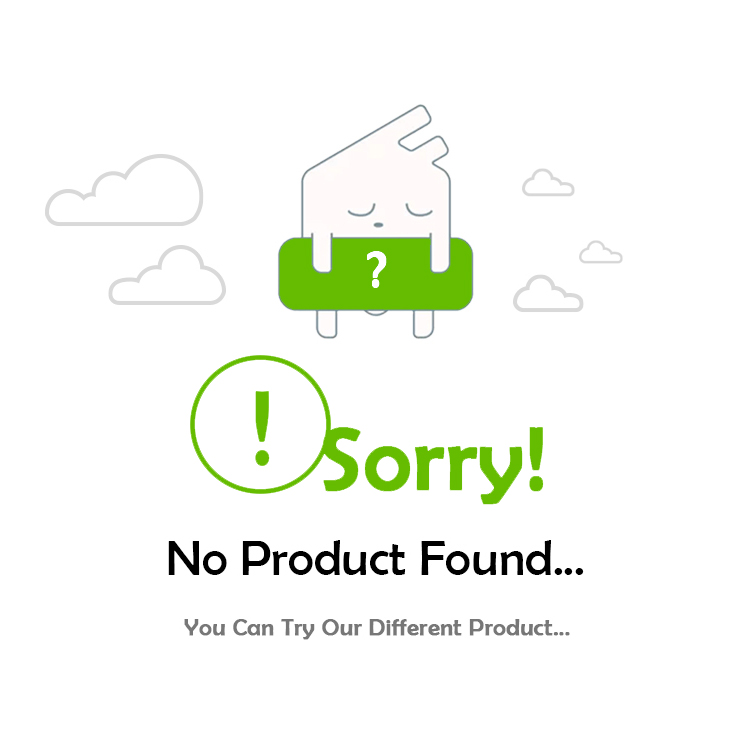

<div class="w-[100%]">
  <div *ngIf="MobileMenu == false" class="w-[100%] flex justify-between h-[10vh]">
    <div class="2xl:w-[20%] md:w-[30%] xl:w-[30%] flex justify-end items-center 2xl:pr-5 xl:pr-4">
      <app-breadcrumb></app-breadcrumb>
    </div>
    <div class="2xl:w-[20%] md:w-[30%] xl:w-[30%] flex justify-start items-center 2xl:pl-5 xl:pl-4">
      <select
        class=" bg-slate-100 dark:bg-slate-200 focus:outline-none transition duration-150 ease-in-out rounded hover:bg-gray-300 dark:hover:bg-gray-600 dark:text-indigo-600 text-black px-6 py-2 text-sm focus:ring-4 focus:ring-blue-300 text-center inline-flex items-center dark:focus:ring-blue-800"
        (change)="onSortOptionSelected($event)">
        <option hidden disabled selected value="">Sort By:</option>
        <option class="p-3 space-y-1 text-sm text-gray-700 dark:text-gray-200" value="popularity">
          Popularity
        </option>
        <option class="p-3 space-y-1 text-sm text-gray-700 dark:text-gray-200" value="lowToHigh">
          Price -- Low to High
        </option>
        <option class="p-3 space-y-1 text-sm text-gray-700 dark:text-gray-200" value="highToLow">
          Price -- High to Low
        </option>
        <option class="p-3 space-y-1 text-sm text-gray-700 dark:text-gray-200" value="newestFirst">
          Newest First
        </option>
      </select>
    </div>
  </div>

  <div class="w-[100%] border-t-2 flex">
    <!-- side nav  -->
    <ng-container>
      <div *ngIf="MobileMenu == false || OpenNav" class="w-[100%] xl:w-[350px]">
        <div class="w-[100%] bg-white h-screen fixed lg:sticky top-[90px] left-0">
          <div class="w-[100%] absolute left-0 top-0 overflow-quick overflow-y-auto h-[75vh] border-r-2">
            <ul *ngFor="let item of filterNames" class="w-[100%] h-auto border-gray-300">
              <li [id]="item.SubId" (click)="OpenSubBar(item.SubId, $event)"
                class="w-[100%] sub-bar-class text-[16px] font-medium uppercase hover:cursor-pointer border-b-[1px] border-gray-300 flex px-5 py-5 justify-between items-center">
                {{ item.name }}
                <div class="= block mr-10">
                  <svg xmlns="http://www.w3.org/2000/svg" [class]="'text-gray-500'" width="25" height="25"
                    viewBox="0 0 24 24" fill="none" stroke="currentColor" stroke-width="2" stroke-linecap="round"
                    stroke-linejoin="round">
                    <path d="m9 18 6-6-6-6" />
                  </svg>
                </div>
              </li>

              <ng-container *ngIf="NavId == item.SubId">
                <li class="w-[100%] text-[15px] border-gray-300 flex pl-10 py-3 justify-start items-center"
                  *ngFor="let subitem of item.subdata">
                  <div class="flex items-center">
                    <input type="checkbox" (click)="selectFilter(item.id, subitem.name)" [(ngModel)]="subitem.select"
                      [value]="subitem.name"
                      class="w-4 h-4 bg-gray-100 border-gray-300 rounded focus:ring-white dark:focus:ring-white text-red-500 dark:ring-offset-gray-800 focus:ring-0 dark:bg-gray-700 dark:border-gray-600" />
                    <label [class]="subitem.select ? 'text-red-600' : 'text-black'"
                      class="ml-2 text-sm font-medium text-gray-900 dark:text-gray-300">{{ subitem.name }}</label>
                  </div>
                </li>
              </ng-container>
            </ul>
          </div>
        </div>
      </div>
    </ng-container>
    <!-- side nav ends  -->
    <ng-container *ngIf="isLoading == true && isLoaded == false">
      <div class="spinner w-[100%] flex justify-center mt-10">
        <mat-spinner [diameter]="50"></mat-spinner>
      </div>
    </ng-container>
    <ng-container *ngIf="isLoading == false && isLoaded == true">
      <ng-container *ngIf="Data.length != 0">
        <div *ngIf="!OpenNav" class="w-[100%] xl:w-[80%] 2xl:w-[80%]">
          <div class="w-[100%] p-5 mt-10">
            <app-product-card3 [page_title]="'favourites'"
              [grid_style]="
                ' justify-center items-center grid grid-cols-2 sm:grid-cols-2 md:grid-cols-3 lg:grid-cols-3 2xl:grid-cols-4 xl:grid-cols-3 gap-3 justify-center m-auto'"
              [border_style]="'border border-gray-200 dark:bg-gray-800 dark:border-gray-700'" [Data]="Data"
              [style_class]="
                '2xl:w-[280px] 2xl:h-85 2xl:m-auto bg-white flex flex-col	flex-wrap items-center border-2 border-gray-200 cursor-pointer justify-center rounded-lg shadow xl:w-[280px] xl:h-70px lg:w-[290px]  md:w-[250px] w-[100%]'"
              [image_card_style]="' w-[100%] h-[210px] sm:h-[250px] lg:h-[280px]'"></app-product-card3>
          </div>
        </div>
      </ng-container>
      <ng-container *ngIf="Data.length == 0">
        <div class="w-[100%] justify-center flex">
          
        </div>
      </ng-container>
    </ng-container>
  </div>
  <!-- <ng-container>
    <div class="spinner uploader-status w-[100%] flex justify-center mt-4" *ngIf="spineeractive">
      <mat-spinner  color="accent" [diameter]="50"></mat-spinner>
    </div>
    <div class="bg-gray-200 text-center text-gray-600 text-lg mt-4" *ngIf="isLastPage">
      No more products available. 
    </div>
  </ng-container> -->
  <div
    *ngIf="MobileMenu == true"
    class="w-[100%] z-10 flex fixed bottom-0 bg-white border-t-[2px] border-gray-300">

  <div *ngIf="MobileMenu == true" class="w-[100%] flex fixed bottom-0 bg-white border-t-[2px] border-gray-300">
    <button
      class="w-[50%] border-r-[2px] border-gray-300 flex justify-center text-gray-600 text-[17px] items-center py-5">
      SORT
    </button>
    <button (click)="openNavFunc()" class="w-[50%] flex justify-center items-center text-gray-600 text-[17px] py-5">
      FILTER
    </button>
  </div>
  <div *ngIf="MobileMenu == true && OpenNav == true"
    class="w-[100%] flex fixed bottom-0 bg-white border-t-[2px] border-gray-300">
    <button (click)="closeNavFunc()"
      class="w-[100%] border-r-[2px] border-gray-300 flex justify-center text-gray-600 text-[17px] items-center py-5">
      CLOSE
    </button>
  </div>
</div>